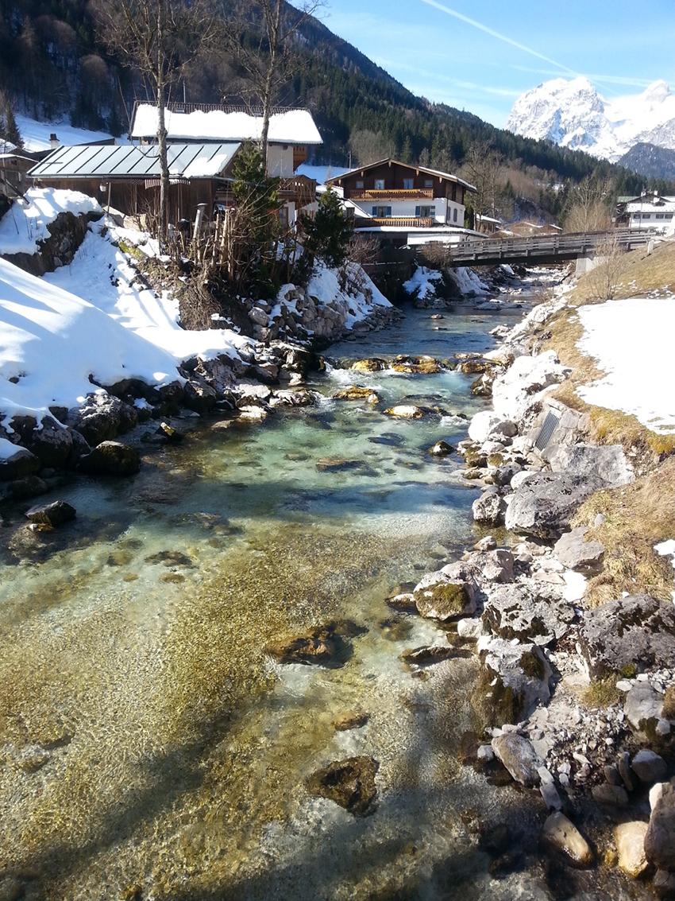
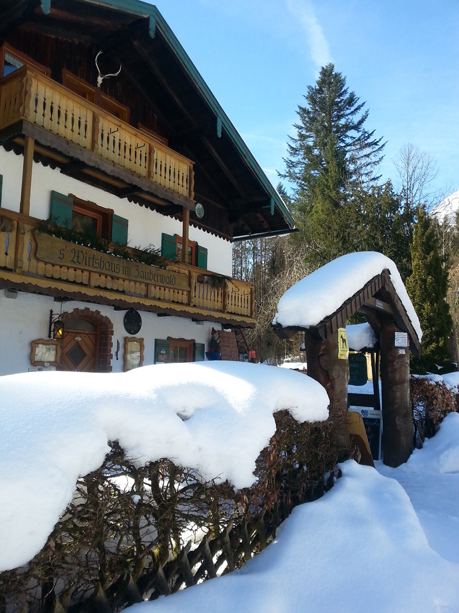
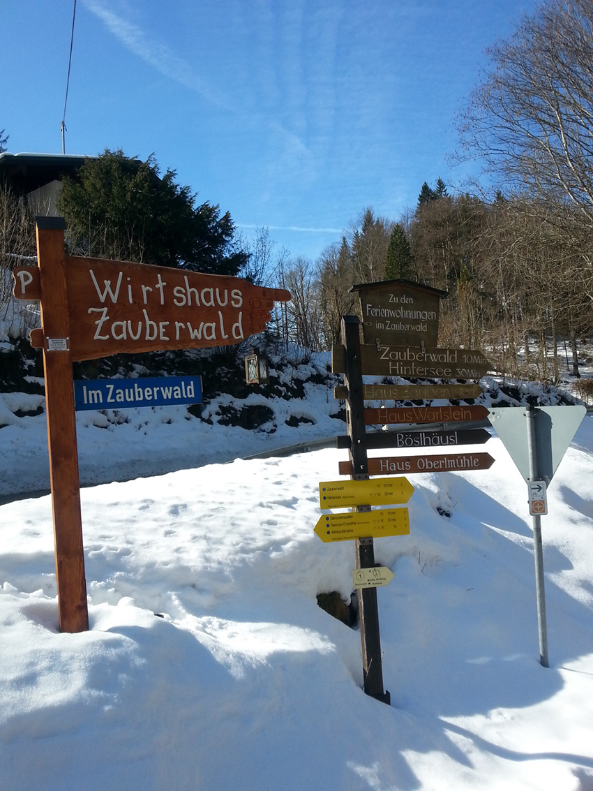
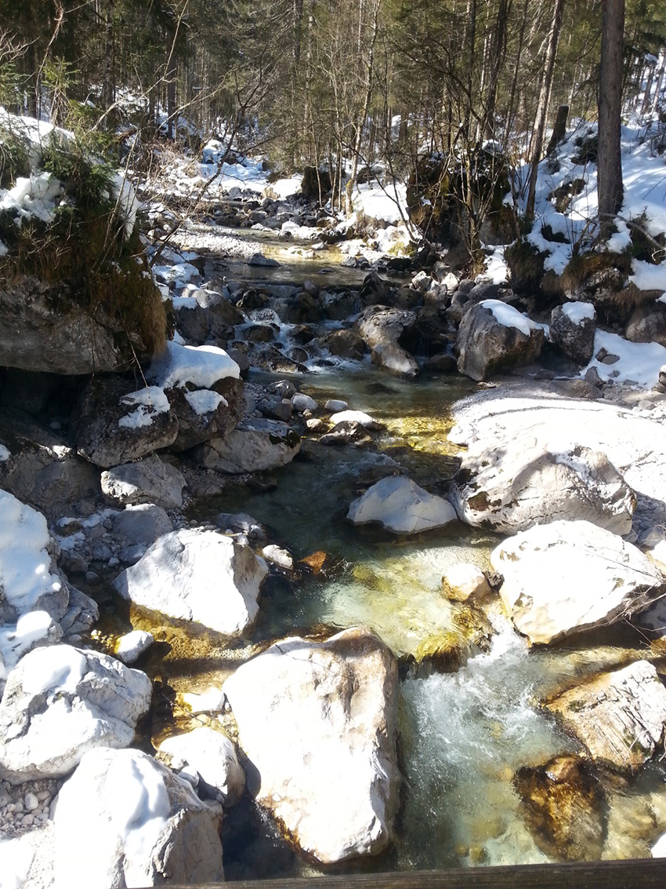
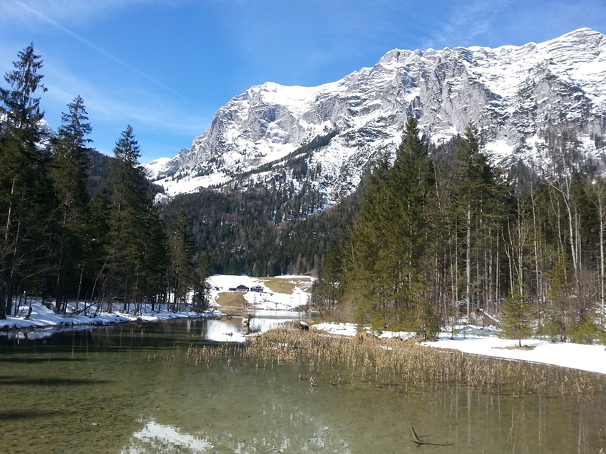
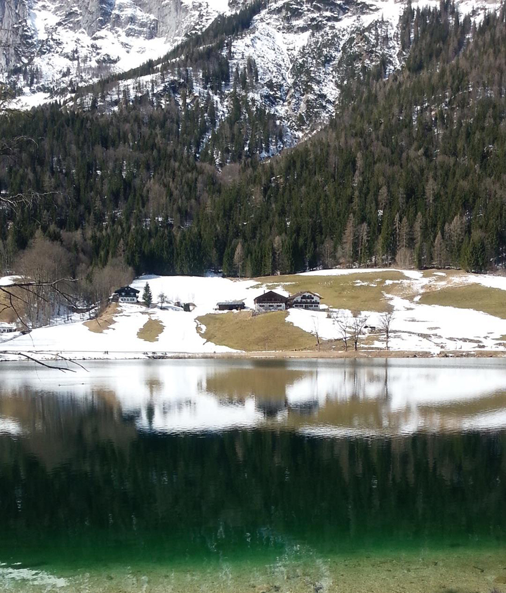
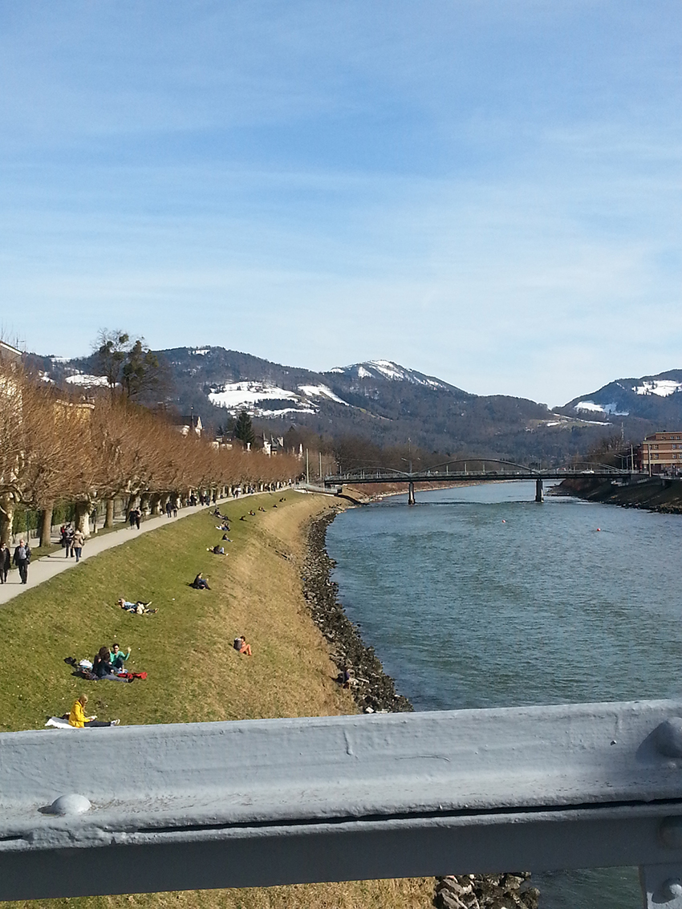
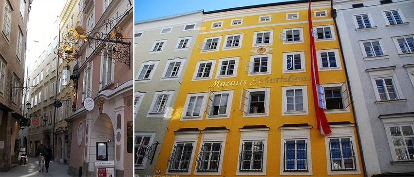
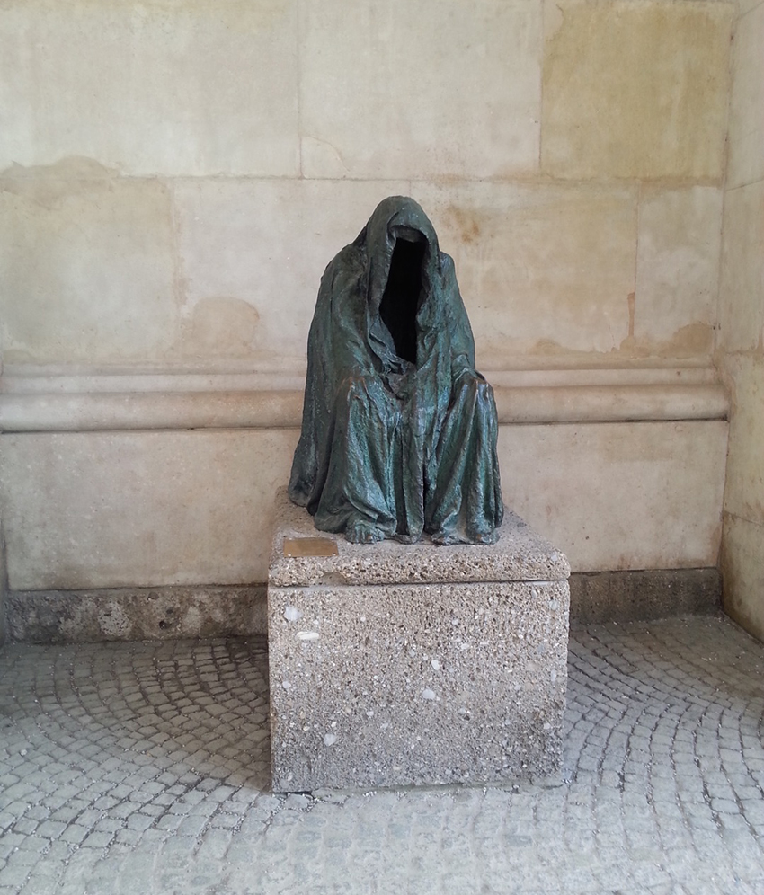
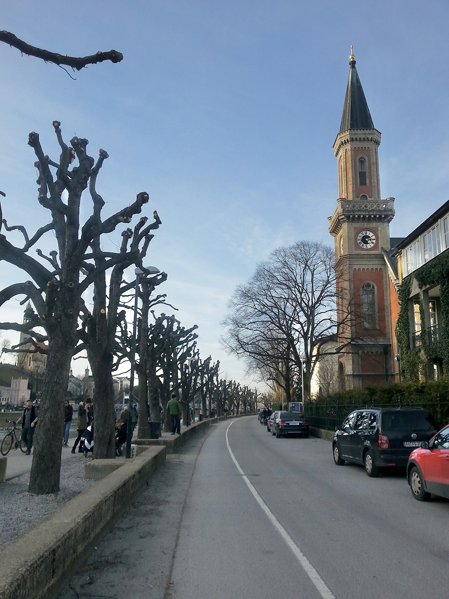

那時候我在德國實習。
半個月後，德國麻疹突發於學生中，於是我們幾個台灣人，同樣被要求到醫院接種德國麻疹疫苗，並且被醫院要求「居家休息」。
剛到德國就突然獲得10來天假期，徹底激發四個女孩的旅遊魂。因此，四人拆兩隊，同學B & C去了布達佩斯，而我和A同學則去了慕尼黑。
決定去慕尼黑的原因很簡單，我們想去看，迪士尼Logo，煙火從他頭上劃過的那座城堡，據說城堡是以慕尼黑的新天鵝堡為雛形所設計出來的。
由於十天假期足夠長，我在做功課的時候看到一個特別迷人的地名──魔法森林，雖然位於貝希特斯加登國家公園的魔法森林，和新天鵝堡完全在兩個方向，而且交通還特別不方便；我仍然被這美麗的地方吸引，決定將國王湖區也列入我們的行程之一。
雪！搭著DB，一路轉車，我們來到了德國南部阿爾卑斯山脈的貝希特斯加登國家公園區。我們預計一路從Zauberwald魔法森林（位在藍紹），往上找到「辛特湖Hintersee」。雖說萊比錫也有雪，不過萊比錫的雪三月初已經化的差不多了，縱使半夜下雪，也僅能將地板鋪上一層薄霜，遠沒有南德白茫一片的這種積雪規模。
藍紹，這是地名給我一種氣質清冷，潺潺流水，粼粼光影的感受。
而我徒步行所見到的一切景色，則是幫我將這印象，渲染成鮮活的山水麗色。
|  | ||
| 藍紹 |
三月的南阿爾卑斯山，積雪如同薑餅屋上的糖霜一樣，又白又胖，厚厚的積雪，絲毫沒有要融化的意思；魔法森林，這個名字讓整個地區都帶上奇幻色彩，木製的房子在雪中顯得特別夢幻，就像是童話故事裡面的場景，是糖果屋嗎？還是等等大野狼會翻過籬笆闖進民宅？站在森林外的我，沒辦法猜測森林裡面會有怎樣的精靈存在，呵出一口霧氣，雙腿就靠一件台灣買的單薄牛仔褲，抬步進入了積雪深厚的魔法森林。
|  | ||
| 童話屋 |
我們跟著前人的腳步走，踩在前人為我們一步步踏出來的道路上，看著這讓人心神一曠的雪景，心理沒來由地感嘆，沒有甚麼紛雜的心緒，只能是讚嘆大自然的神秘。白雪覆蓋了地面的一切生息，卻蓋不住森林的綠；分明是零下的嚴寒天氣，卻依然有著自己的神韻，他並不蕭索，反而帶著生機。
|  | ||
| 魔法森林指路牌，藍色牌子顯示「此處是魔法森林」 |
水，是森林中我覺得最特別的存在。
試想，-11˚C，積雪不化，山澗卻是潺潺流水，清澈見底的橫貫了整個森林。我們逆著支流走，支流不寬也不深，如果穿著防滑靴，踩在突起的石塊上，基本上可以橫越支流。
我走上前去，捧起一把水。
「嘶！」
冰涼刺骨的感覺從指尖一路透進全身，本來就凍得發白的指節，這下又要花更多時間回暖；不過，值得，我在22歲捧過一回阿爾卑斯山泉水！
|  | ||
| 碎石遍布的山澗 |
據說在3500年前，大約150萬立方米的石塊從周圍的高山上落入這個山谷，阻絕了整個山谷，形成了堰塞湖Hintersee；湖水為了尋找出路不斷沖蝕之下，形成了這如童話故事般的景致，故而被稱為 Zauberwald魔法森林。
我們一路在無人破壞的大片積雪上，寫上了自己名字的德語拼音；一路好奇的張望著魔法森林；一路逆流而上，支流面越來越寬，我知道我們靠近Hintersee了；遠遠的我似乎看到了辛特湖湖面；須臾，我們看到了路標「Hintersee」，這表示，湖在前方。
|  | ||
| 辛特湖 |
持續走，走到湖邊，我愣神了。
我看到了一大片鏡子，是的，鏡子，倒映著積雪的草坪，樹木，以及整座雪山。我記得，我順著湖邊走，看著德國人牽著狗過來散步，想像著德國人的生活；我記得，我坐在湖邊的凳子上，吹著颼寒的湖風，笑著看著雪山，看著森林，看著天空。
|  | ||
| 鏡影 |
賞了小半個小時的景，實在扛不住凍，我們慢慢的走在另一條道路上，預計返回鎮上；飯後我們去研究當地的巴士站牌時，我們突然看到一個地名Salzburg，奧地利薩爾茲堡！
貝希特斯加登這個地區，特別在於，他位於德奧邊界，只要搭個巴士，就可以到奧地利薩爾茲堡；不過當天來回要先確認返程時間，時間太晚，無論是巴士或者火車，基本上都沒有班次。而我們在貝希特斯加登區入住的民宿提供地區通行卡，貝希特斯加登整個區，交通全部免費；我們就搭乘著巴士進了奧地利境內，不過要記得奧地利境內的路線是要補票的；務必記得補票，歐洲逃票被抓到的話代價高昂！
一趟意外之旅就此開始
我記得我們是下午一點半左右到的薩爾茲堡，陽光明媚，在薩爾茲河河畔大草皮上，喜歡野餐、曬太陽的歐洲人們，三三兩兩的躺著享受溫暖；不過就一小時車程，彷彿到了兩個季節迥異的地區。
|  | ||
| 薩爾茲河畔 |
我們橫跨了大橋，進入薩爾茲堡老城區，從進入老城區開始，我感覺我走進了電影裡。老城區到處充斥著藝術的氣息，還記得小時候看過一部以莫札特為主角的音樂電影，現在想來，肯定就是在薩爾茲堡拍攝的吧？那些充滿藝術感和設計感的店鋪招牌，就是位於莫札特出生的糧食巷弄！整條街就像自帶著魔笛的背景音樂，配上和煦的日照，當場我就蹦跳了起來，就像是把電影搬到了現實中，絲毫沒有違和感。
|  | |
| 糧食巷弄的店鋪招牌 | 莫札特家 |
晃著晃著，薩爾茲堡大教堂外，著名奧地利雕塑家安娜·克勞米的雕塑，名為「Pietà」，為道德外衣系列作；一個披著鬆垮斗篷的人形，看不到真實的人體。
由於時間關係，沒辦法深入的走訪薩爾茲堡，我們匆匆參訪老城區之後，開始往火車站移動，試著去趕上末班巴士；沿途，我感覺，我走進了哈利波特系列電影，這棵樹，像不像那棵會打人的，但是枝條被修剪過的渾拼柳？
|  | ||
| 道德外衣雕像 | ||
|  | ||
| 渾拼柳 |
坐在回程的巴士上，我沉醉又微微帶點遺憾，由於隔天回慕尼黑的火車票已經訂好，後續行程也無法捨棄，因而沒辦法更深入體驗藝術之都薩爾茲堡，但這個小城市，讓我在短短四個小時，體驗了兩部電影，值得。
離開森林穿越城市，我從自然走向藝術，我想，這就是魔法吧，身心靈俱足。